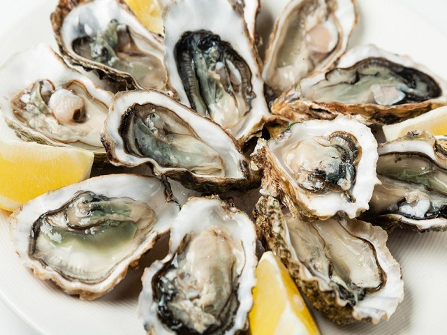
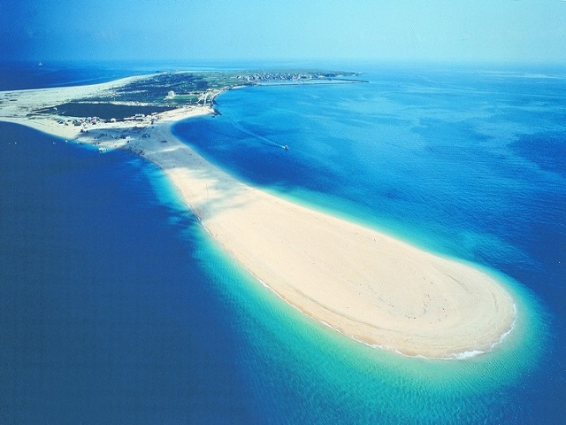
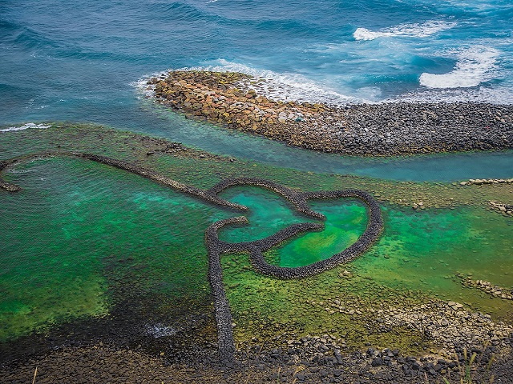
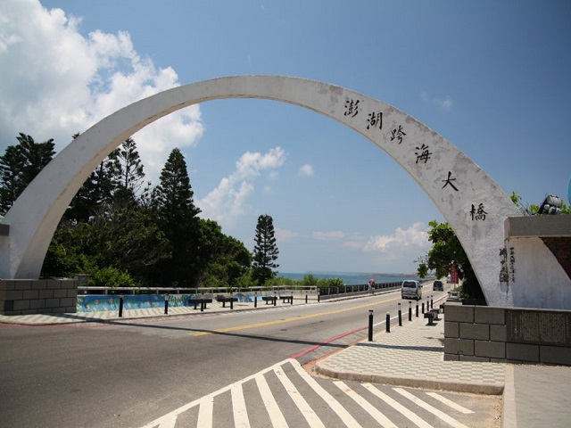

Penghu

Food:
海鮮(Seafood)

Penghu has the most fresh seafood, and the most popular one is oyster, it is
very strange that all the seafood here is bigger than the seafood at other places, so if you are a big fan of seafood,
then Penghu is going to be a good place to visit.
仙人掌冰(Cactus ice)
 It is one of the typical dishes, it is a bit sweet and sour, and the texture is more fluffy and sticky
than normal ice.
It is one of the typical dishes, it is a bit sweet and sour, and the texture is more fluffy and sticky
than normal ice.
It is one of the typical dishes, it is a bit sweet and sour, and the texture is more fluffy and sticky
than normal ice.
Attractions:
吉貝嶼(Chi-Bei island)

The name of it is derive from the shape of this island, and the views are really good.
雙心石滬(Twin-Hearts Stone Weir)

It is particularly for peoplae to love to photograph the special scene, if you have the drone, then you must visit there.
澎湖跨海大橋(Penghu Great Bridge)

Every person come to Penghu will must take picture here, so you must come here for once.